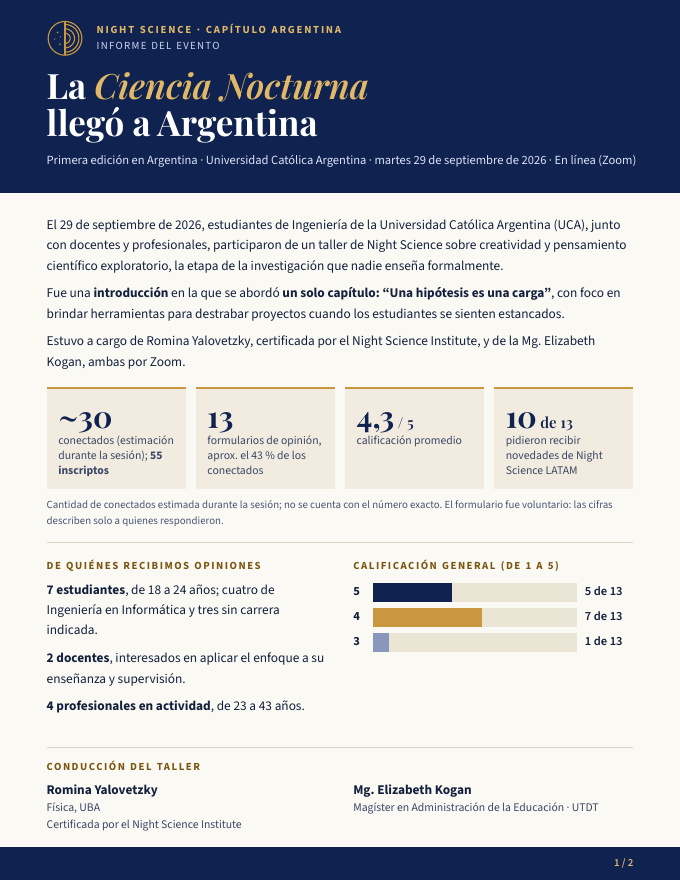

Capítulo Argentina
La Ciencia Nocturna llegó a Argentina
Talleres sobre la etapa de la investigación que nadie enseña formalmente: la creatividad y el pensamiento científico exploratorio.

La iniciativa
Night Science es un enfoque sobre la parte exploratoria de la ciencia: cómo surgen las ideas, cómo se destraba un proyecto y cómo convivir con la duda mientras se investiga. Night Science Argentina lleva esas herramientas a estudiantes, docentes y profesionales del país.
Nuestra primera edición se realizó el 29 de septiembre de 2026 en la Universidad Católica Argentina (UCA), en línea por Zoom, con un taller centrado en un solo capítulo: “Una hipótesis es una carga”.
Contacto
¿Querés llevar el taller a tu universidad, organización o equipo? Escribinos.
Informe de la primera edición
Dos páginas con los resultados del taller, lo que más valoraron los participantes y sus propias palabras.
- ~30conectados (estimación) de 55 inscriptos
- 13formularios de opinión
- 4,3 / 5calificación promedio
- 10 de 13pidieron recibir novedades de Night Science LATAM
El formulario fue voluntario: las cifras describen solo a quienes respondieron.
En sus palabras
“La forma que explicó como una hipótesis nos puede sesgar del progreso, viendo solo el fin sin ver los tropiezos.”Estudiante
“Entender que el proceso de investigación debe ser disfrutado y que hay que aceptar las dudas, que una hipótesis falle y retroceder.”Estudiante
“Me gustó los ejemplos de casos reales y que se acerca a mi campo de estudio.”Estudiante de Ingeniería en Informática
“Conocer el estado actual de este enfoque sobre metodología de la investigación para eventuales asesorías sobre realización de tesis.”Docente
Conducción del taller
Lic. Romina Yalovetzky
Lic. en Física, Universidad de Buenos Aires (UBA). Certificada por el Night Science Institute.
Investigadora en computación cuántica y machine learning en JPMorgan Chase en Nueva York y maestranda en Ciencias de la Computación en NYU. Más de 10 años de trayectoria en ciencia y tecnología.
Mg. Elizabeth Kogan
Mg. en Administración de la Educación, UTDT. Lic. y Profesora en Ciencias de la Educación, UCA.
Especialista en Gestión de Organizaciones Sin Fines de Lucro (UTDT, UDESA, CEDES). Fue secretaria académica y coordinadora de posgrados, y asesora de la Dirección de Formación Docente del Ministerio de Educación de CABA.
Night Science Institute
El Night Science Institute surgió de la iniciativa de dos científicos, con el objetivo de transformar la cultura científica enseñando y promoviendo el proceso creativo en la investigación. Desde 2021 el taller se realizó en más de 30 instituciones con al menos un facilitador certificado por el Instituto; Argentina es la primera vez.
Itai Yanai, PhD
Cofundador del Night Science Institute. Profesor de Bioquímica en la escuela de medicina de la New York University.
Martin Lercher, PhD
Cofundador del Night Science Institute. Profesor de biología celular computacional en la Heinrich Heine University Düsseldorf, Alemania.
Oliver Bogler, PhD
CEO del Night Science Institute en New York.